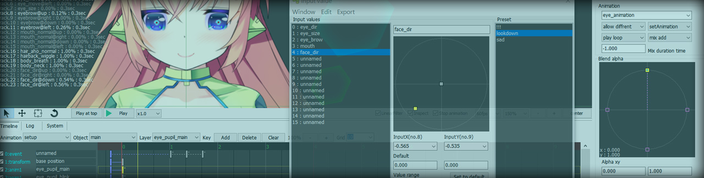
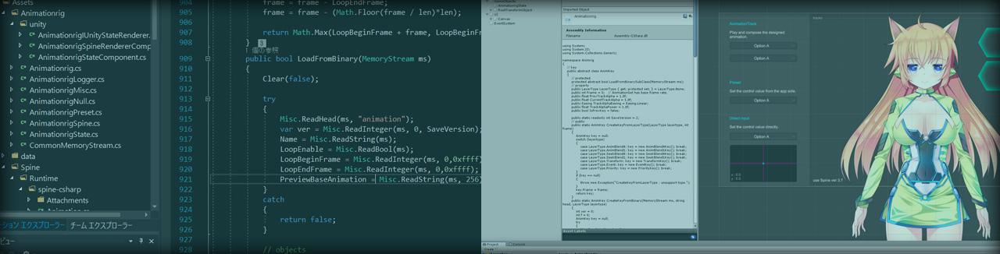
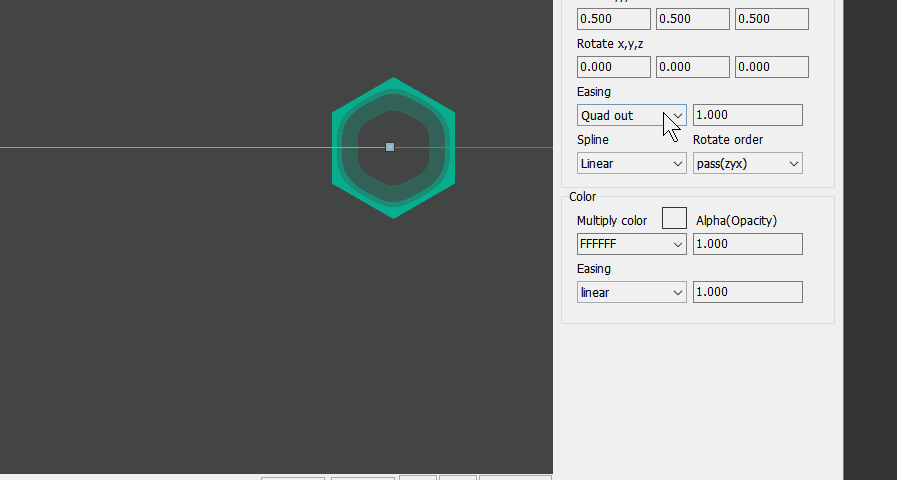

複数の
Control multi-tracks on timeline
You can control multiple spine -animation with timeline.
It is very useful when you want to separate and manage animation for each parts.
複数のSpine アニメーションをタイムラインでコントロールすることが出来ます。
パーツごとのアニメーションを分けて管理したい場合にとても便利です。
複数の
Control value from appside
You can control the spine -animation from the application side using runtime or unity -components too easy.
ランタイムやunity コンポーネントを使って、簡単にアプリケーション側からSpine アニメーションをコントロールすることが出来ます。
ランタイムや
Editor

This editor provides the function to control animation in the timeline.
You can not directly manipulate bones and slots, but can control the animation blend ratio and etc.
The maked animation can be run on the application using the runtime.
エディタはタイムラインでアニメーションを操作するとてもシンプルな物です。 ボーンやスロットを直接操作できませんが、アニメーションのブレンド率などを細かく設定できます。 作成したアニメーションはランタイムを用いてアプリケーション上で動作させることが出来ます。
エディタはタイムラインでアニメーションを操作するとてもシンプルな物です。 ボーンやスロットを直接操作できませんが、アニメーションのブレンド率などを細かく設定できます。 作成したアニメーションはランタイムを用いてアプリケーション上で動作させることが出来ます。

Runtime

Embed in the application using the runtime.
Animationrig (alone) is a non-dependent library. It can be used in various environments.
Provide C++、C-sharp、Unity Component.
Please try Unity sample.
アプリケーションに組み込むにはランタイムを使用します。 Animationrig(単体)は依性が無いライブラリです。環境を選ばず使用できます。 C++、C-sharp、Unityコンポーネントをメインに提供しています。 まずはUnityサンプルをお試しください。
アプリケーションに組み込むにはランタイムを使用します。 Animationrig(単体)は依性が無いライブラリです。環境を選ばず使用できます。 C++、C-sharp、Unityコンポーネントをメインに提供しています。 まずはUnityサンプルをお試しください。
Release note

2019/07/11
Easing has increased.
イージングが増えました。プレビュー付き。
Easing has increased.
イージングが増えました。プレビュー付き。
Download
FreeSoftware
Version : 0.5 , rev 354 , latest 27
Editor-platform : windows
Runtime-language : c++ , c-sharp , UnityComponent
Spine file version : 3.7 , 3.8.32
Version : 0.5 , rev 354 , latest 27
Editor-platform : windows
Runtime-language : c++ , c-sharp , UnityComponent
Spine file version : 3.7 , 3.8.32
Contact , Support , Request
I can not respond much, but please feel free :-)
あまり対応できませんが、お気軽にどうぞ。
あまり対応できませんが、お気軽にどうぞ。
copyright Ko-Ta Takeuchi.